6.6. Pre-packaged pipelines
This page contains some examples of the pre-packaged pipelines that could be deployed simultaneously with the Cloud Pipeline platform.
General user journey for the usage of any prepared pipeline is the following:
- Upload the data, that the pipeline will work with, to the input data storage.
- Prepare a place for the output data in some storage - where results will be loaded once pipeline is completed.
- Open the Library and find the pipeline.
- Select a pipeline version that should be launched if there are several ones.
- At the Launch form:
- select a pipeline configuration if needed or leave the default
- specify values of the pipeline parameters - here, paths to the input data and output results shall be specified, and other parameters if necessary
- Launch a pipeline run.
- If necessary, monitor the pipeline execution from the Run logs page of the launched pipeline.
- Once the pipeline run is completed, navigate to the output path - to review pipeline results.
For more details:
- a simple example of the preparation and pipeline launch - Quick start
- how to launch a pipeline - Pipeline launch
- additionally, about the pipeline launch and results review - Appendix E. Pipeline objects concept
NextFlow pipelines
Nextflow pipelines are workflows constructed from individual, parallel processes that perform computational tasks.
Processes communicate via channels, which act as queues, enabling a reactive dataflow model.
This allows for efficient parallelization and scaling, making Nextflow a powerful tool for data-intensive workflows.
All NextFlow pipelines runs in the Cloud Pipeline platform support special NextFlow visualization - for details see here.
Additionally, via the GUI plugins custom NextFlow view for the Launch form can be configured.
Rnaseq
Rnaseq is a bioinformatics pipeline that can be used to analyse RNA sequencing data obtained from organisms with a reference genome and annotation.
It takes a samplesheet and FASTQ files as input, performs quality control (QC), trimming and (pseudo-)alignment, and produces a gene expression matrix and extensive QC report.
Features that need to be taken into account when preparing and running Rnaseq via the Cloud Pipeline platform:
Pipeline overview:

Pipeline parameters:
samplesheet_path- input path to the sheet (CSV) containing metadata about samples to processcustom_config_path- path to the custom Nextflow config for the pipeline including paths to the reference genomefastaand reference annotationoutput_storage- output path where the results will be saved
Example and format of the samplesheet file - each row represents a fastq file (single-end) or a pair of fastq files (paired end) for a sample with the strandedness value:
sample,fastq_1,fastq_2,strandedness
SAMPLE1,<PATH_TO_SAMPLE1_1_FASTQ>,<PATH_TO_SAMPLE1_2_FASTQ>,auto
SAMPLE2,<PATH_TO_SAMPLE2_1_FASTQ>,<PATH_TO_SAMPLE2_2_FASTQ>,auto
SAMPLE3,<PATH_TO_SAMPLE3_1_FASTQ>,<PATH_TO_SAMPLE3_2_FASTQ>,reverse
...
Example and format of the custom_config file, more details about pipeline steps - you can find in the main README.md in pipeline documents.
Output results example:
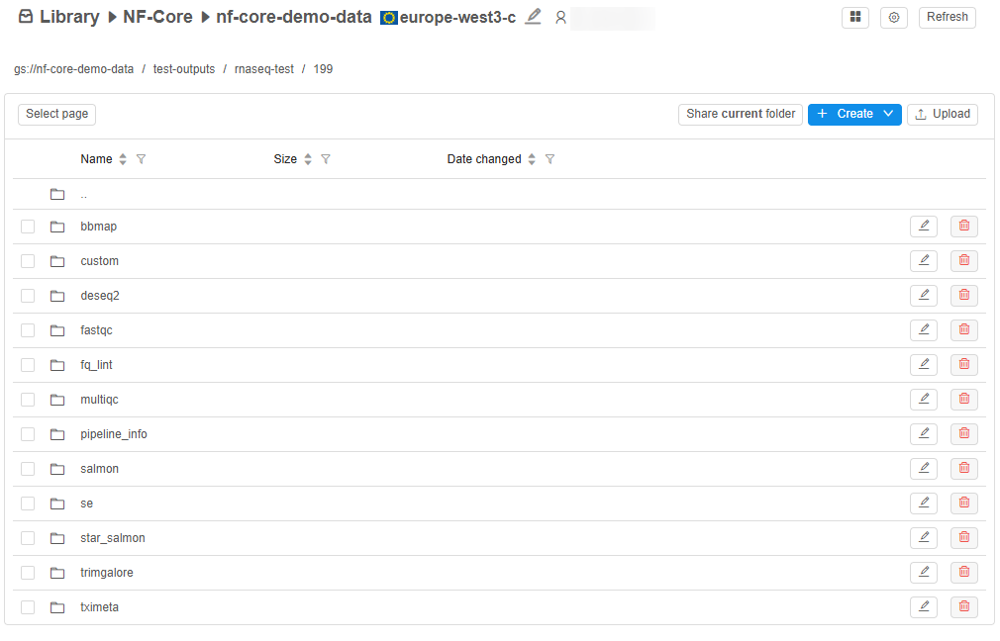
Scrnaseq
Scrnaseq is a bioinformatics analysis pipeline for processing 10x Genomics single-cell RNA-seq data, offering support for various alignment tools and downstream analyses.
Pipeline supports:
SimpleAF(Alevin-Fry) +AlevinQCSTARSoloKallisto+BUStoolsCellrangerUniversc
Features that need to be taken into account when preparing and running Scrnaseq via the Cloud Pipeline platform:
Pipeline overview:
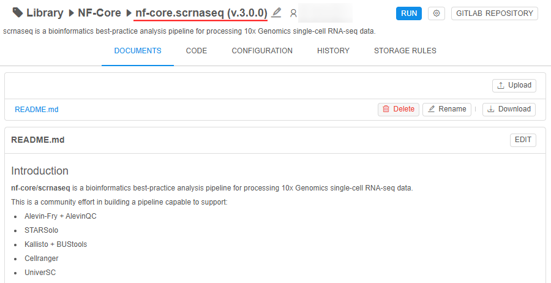
Pipeline parameters:
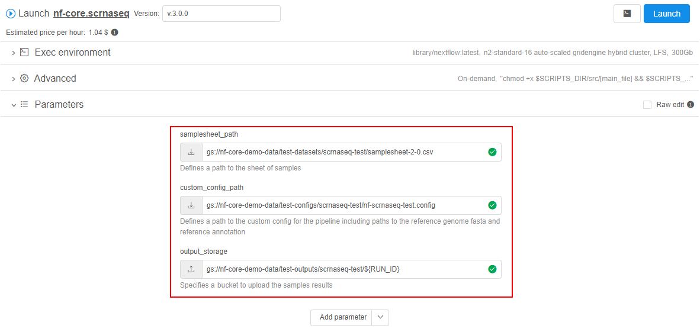
samplesheet_path- input path to the sheet (CSV) containing metadata about samples to processcustom_config_path- path to the custom Nextflow config for the pipeline including paths to the reference genomefastaand reference annotationoutput_storage- output path where the results will be saved
Example and format of the samplesheet file - each row represents a fastq file (single-end) or a pair of fastq files (paired end) for a sample with number of expected cells:
sample,fastq_1,fastq_2,expected_cells
SAMPLE1,<PATH_TO_SAMPLE1_1_FASTQ>,<PATH_TO_SAMPLE1_2_FASTQ>,10000
SAMPLE2,<PATH_TO_SAMPLE2_1_FASTQ>,<PATH_TO_SAMPLE2_2_FASTQ>,10000
SAMPLE3,<PATH_TO_SAMPLE3_1_FASTQ>,<PATH_TO_SAMPLE3_2_FASTQ>,20000
...
Example and format of the custom_config file, more details about pipeline steps - you can find in the main README.md in pipeline documents.
Output results example:
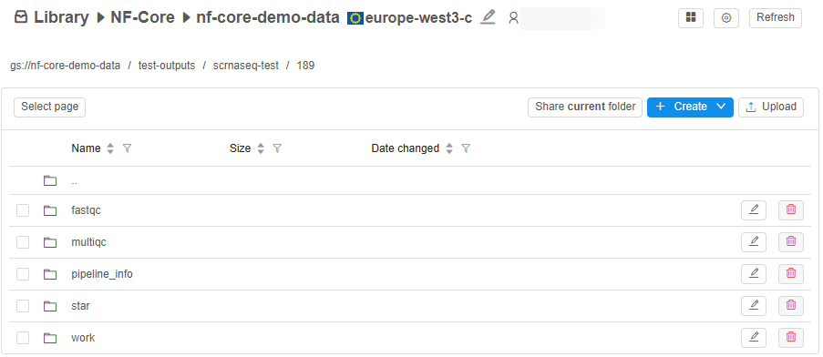
Sarek
Sarek is a workflow designed to detect variants on whole genome or targeted sequencing data.
Initially designed for Human, and Mouse, it can work on any species with a reference genome. Sarek can also handle tumour / normal pairs and could include additional relapses.
Features that need to be taken into account when preparing and running Sarek via the Cloud Pipeline platform:
Pipeline overview:
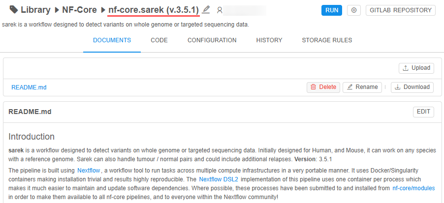
Pipeline parameters:
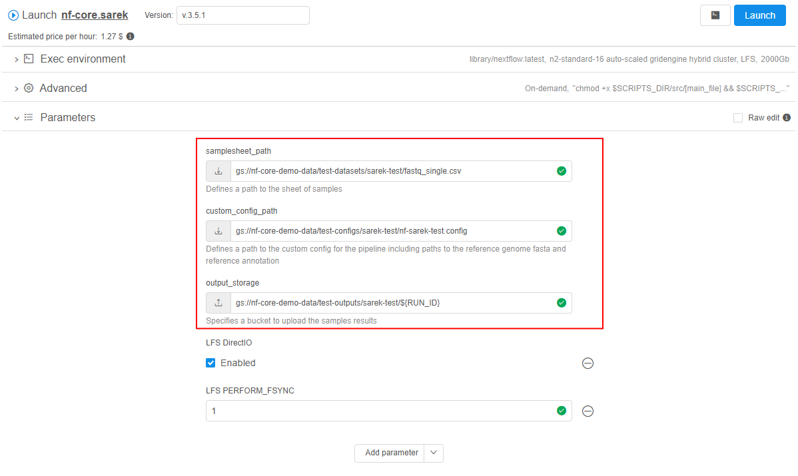
samplesheet_path- input path to the sheet (CSV) containing metadata about samples to processcustom_config_path- path to the custom Nextflow config for the pipeline including paths to the reference genomefastaand reference annotationoutput_storage- output path where the results will be saved
Note: there are severalLFSparameters - these are Cloud Pipeline platform settings, they are required for the correct pipeline execution and should not be changed by the user
Example and format of the samplesheet file - each row represents a pair of fastq files (paired end) for a sample with patient ID and lane ID:
patient,sample,lane,fastq_1,fastq_2
ID1,SAMPLE1,LANE1,<PATH_TO_ID1_SAMPLE1_LANE1_1_FASTQ>,<PATH_TO_ID1_SAMPLE1_LANE1_2_FASTQ>
ID1,SAMPLE1,LANE2,<PATH_TO_ID1_SAMPLE1_LANE2_1_FASTQ>,<PATH_TO_ID1_SAMPLE1_LANE2_2_FASTQ>
...
Example and format of the custom_config file, more details about pipeline steps - you can find in the main README.md in pipeline documents.
Output results example:
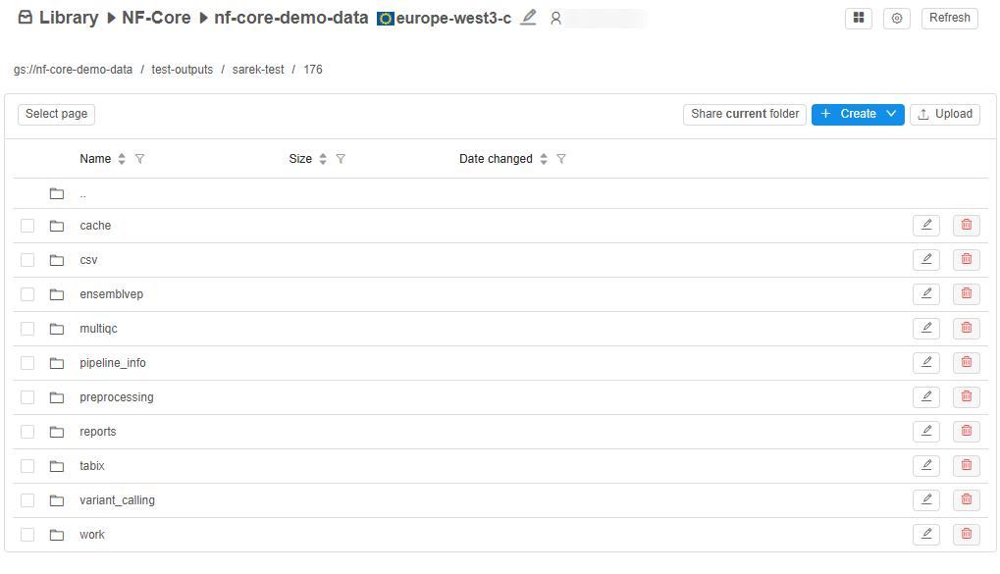
Methylseq
Methylseq is a bioinformatics analysis pipeline used for Methylation (Bisulfite) sequencing data.
It pre-processes raw data from FastQ inputs, aligns the reads and performs extensive quality-control on the results.
Features that need to be taken into account when preparing and running Methylseq via the Cloud Pipeline platform:
Pipeline overview:
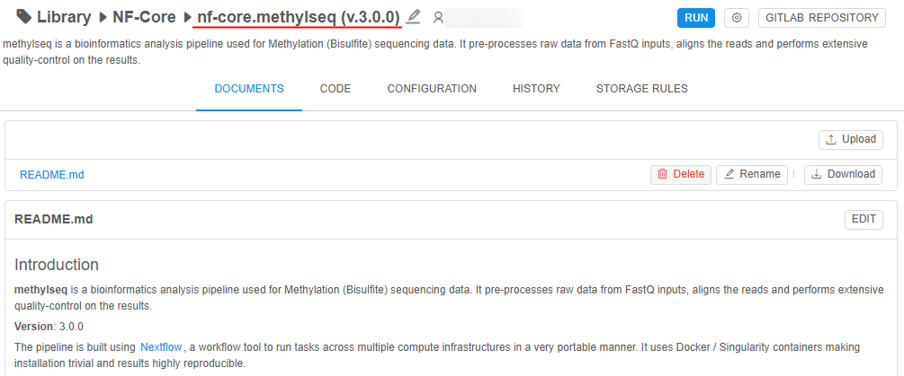
Pipeline parameters:
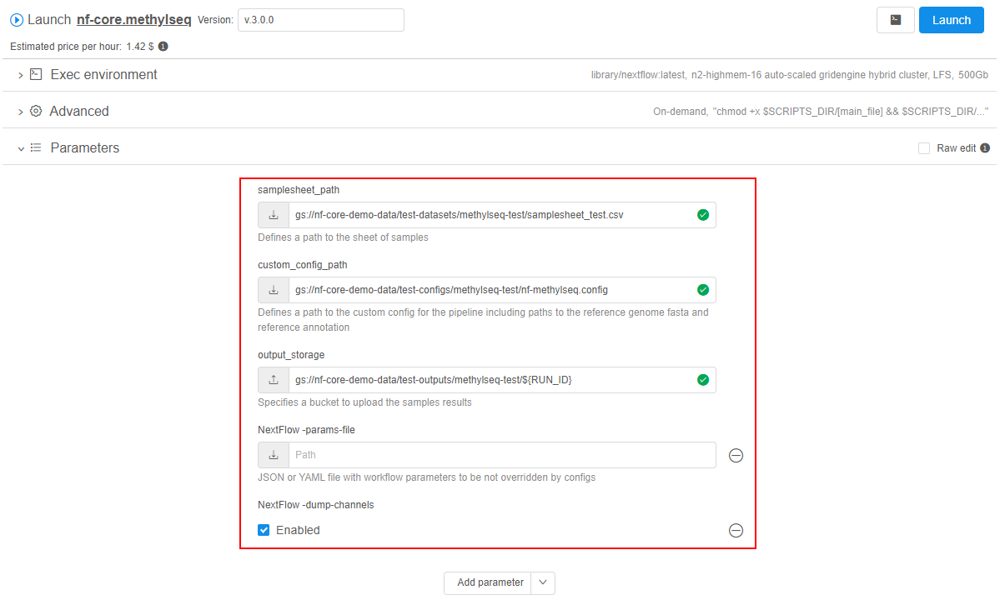
samplesheet_path- input path to the sheet (CSV) containing metadata about samples to processcustom_config_path- path to the custom Nextflow config for the pipeline including paths to the reference genomefastaand reference annotationoutput_storage- output path where the results will be savedNextFlow -params-file- path to the pipelineJSON/YAMLfile with workflow parameters to be not overridden by configsNextFlow -dump-channels- allows to dump channels output for debugging purpose
Example and format of the samplesheet file - each row represents a fastq file (single-end) or a pair of fastq files (paired end) for a sample with the genome name:
sample,fastq_1,fastq_2,genome
SAMPLE1,<PATH_TO_SAMPLE1_1_FASTQ>,<PATH_TO_SAMPLE1_2_FASTQ>,GENOME1
SAMPLE2,<PATH_TO_SAMPLE2_1_FASTQ>,<PATH_TO_SAMPLE2_2_FASTQ>,GENOME1
SAMPLE3,<PATH_TO_SAMPLE3_1_FASTQ>,<PATH_TO_SAMPLE3_2_FASTQ>,GENOME2
...
Example and format of the custom_config file, more details about pipeline steps - you can find in the main README.md in pipeline documents.
Output results example:
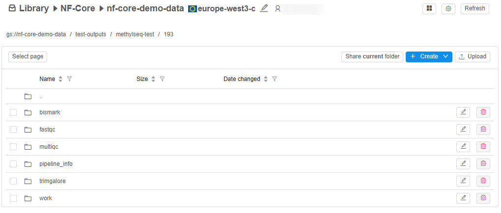
Proteinfold
Proteinfold is a bioinformatics analysis pipeline for Protein 3D structure prediction.
It leverages deep learning models like AlphaFold2, RoseTTAFold and ESMFold to predict protein structures from amino acid sequences.
Features that need to be taken into account when preparing and running Proteinfold via the Cloud Pipeline platform:
Pipeline overview:

Currently, two configurations are supported for the launch:
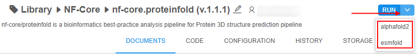
- alphafold2 - uses
AlphaFold2model for the pipeline processing - esmfold - uses
ESMFoldmodel for the pipeline processing
Pipeline parameters:
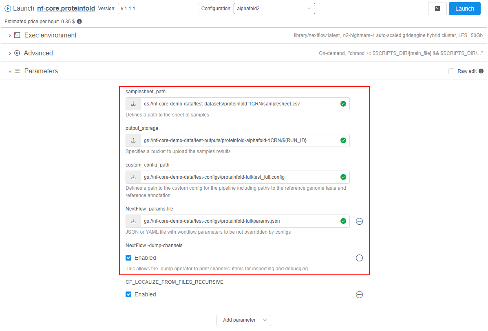
samplesheet_path- input path to the sheet (CSV) containing metadata about samples to processoutput_storage- output path where the results will be savedcustom_config_path- path to the custom config for the pipeline containing model settings and NextFlow executor settingsNextFlow -params-file- path to the pipelineJSON/YAMLfile with workflow parameters to be not overridden by configsNextFlow -dump-channels- allows to dump channels output for debugging purpose
Note:CP_LOCALIZE_FROM_FILES_RECURSIVE- this is a Cloud Pipeline platform setting, that is required for the correct pipeline execution and should not be changed by the user
Example and format of the samplesheet file - each row represents a sequence with its fasta:
sequence,fasta
SEQUENCE1,<PATH_TO_SEQUENCE1_FASTA>
SEQUENCE2,<PATH_TO_SEQUENCE2_FASTA>
...
Example and format of the custom_config file, more details about pipeline steps - you can find in the main README.md in pipeline documents.
Output results example:
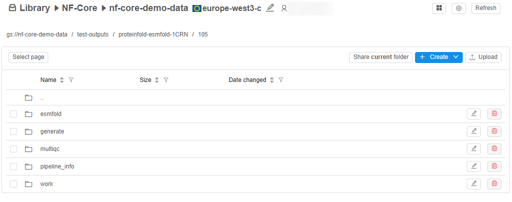
Active Learning Pipeline
Al-docking is an active learning-driven molecular docking pipeline that ingests 3D receptor structures and a chemical compound database.
It iteratively performs docking simulations (QuickVina) and trains machine learning models (DGL, PyTorch) over protein structure files to prioritize promising ligands, producing docking score prediction results, trained models, and a summary report with progress through iteration figures.
Features that need to be taken into account when preparing and running Al-docking via the Cloud Pipeline platform:
Pipeline overview:

Pipeline parameters:
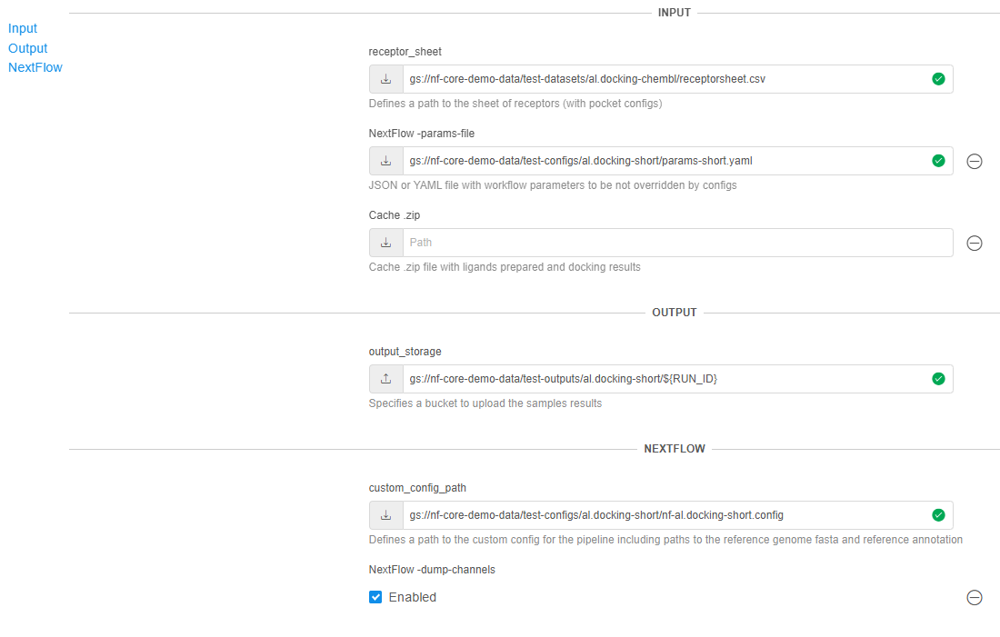
receptor_sheet- input path to the sheet (CSV) containing metadata about receptor target structures to processNextFlow -params-file- path to the pipelineJSON/YAMLfile with workflow parameters to be not overridden by configsCache .zip- path to the cacheZIPfile with ligands prepared and docking resultsoutput_storage- output path where the results will be savedcustom_config_path- path to the custom config containing compound database settings and NextFlow executor settingsNextFlow -dump-channels- allows to dump channels output for debugging purpose
Example and format of the receptor_sheet file - each row represents a receptor with its PDB path and pocket configuration for ligands' docking:
id,pdb,pocket_config
RECEPTOR1,<PATH_TO_RCEPTOR1_PDB>,<PATH_TO_RCEPTOR1_POCKET_CONFIG>
RECEPTOR2,<PATH_TO_RCEPTOR2_PDB>,<PATH_TO_RCEPTOR2_POCKET_CONFIG>
...
Example of the pocket config file:
receptor = <PATH_TO_RCEPTOR1_PDB>
center_x = 14.455
center_y = 75.815
center_z = 36.333
size_x = 66.724
size_y = 108.143
size_z = 111.314
Example and format of the custom_config file, more details about pipeline steps - you can find in the main README.md in pipeline documents.
Output results example:
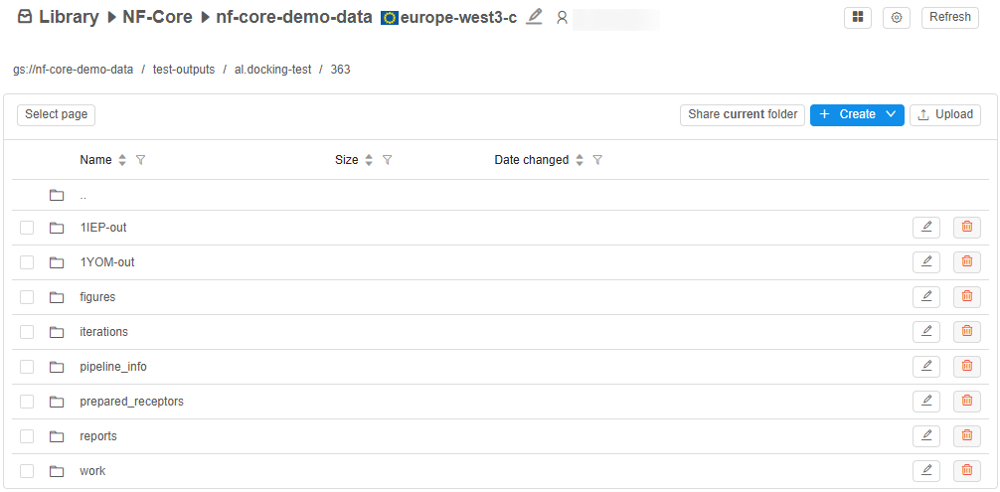
Running Nextflow pipelines on Batch in Google Cloud
This section describes how to extend Cloud Pipeline's main execution backend to run a Nextflow pipeline on Batch in Google Cloud deployment.
Note: tutorial runs the sample pipeline from Nextflow based on RNA-Seq.
In a nutshell, to enable Batch using for Nextflow pipeline runs, the following conditions shall be met:
- Nextflow pipeline (based on Nextflow docker image) is used for the launch.
- In the
cluster.networks.configSystem Preference, configuration section of the machine image, used for the running Nextflow pipelines, contains additional specification that includes GCP service account details. And such service account has corresponding permissions required for running the Batch job. nextflow.configof the pipeline contains specialgoogle-batchprofile, that is used for the Nextflow pipeline run.
Now, let's take a closer look:
Note: before the beginning, make sure that your GCP project has a Virtual Private Cloud (VPC) network with a valid networking configuration.
- Navigate to the System Preferences section and find the
cluster.networks.configpreference. - In
amissection, create an item for the machine image that will be used for the running Nextflow pipelines on Batch, e.g. copy the existing general one image item:
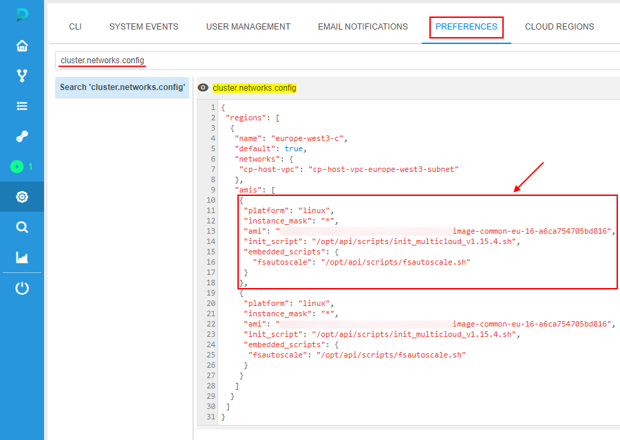
- To the created machine image item, add a Nextflow docker image in the format
"docker_image": "<nextflow_docker_image>, e.g.:
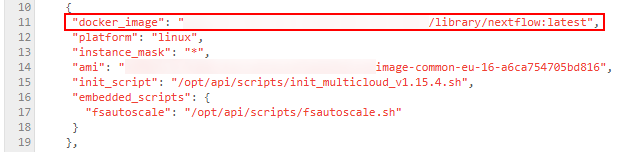
-
To the created machine image item, add an additional specification that includes GCP service account details in the following format:
"additional_spec": { "serviceAccounts": [ { "email": "<gcp_service_account_name>", "scopes": [ "https://www.googleapis.com/auth/cloud-platform" ] } ] }Where
<gcp_service_account_name>- name of your GCP service account. You can find it in the settings of your Google Cloud region, e.g.:
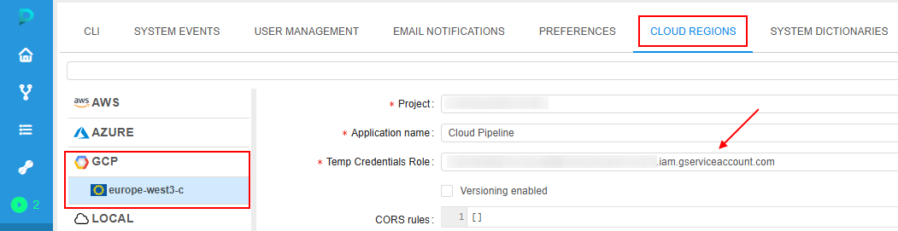
⚠️ Please note, service account must have the necessary permissions to allow the Batch service agent to create and access resources for Batch jobs. The following IAM roles shall be granted for the service account on the current GCP project:- Batch Agent Reporter (
roles/batch.agentReporter) - Storage Admin (
roles/storage.admin) - Logs Writer (
roles/logging.logWriter)
Example of the filled in specification:
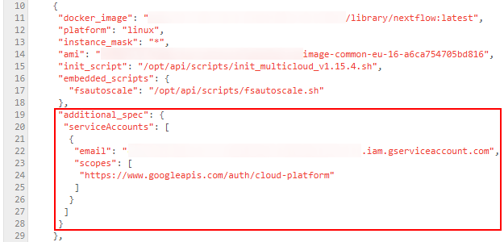
- Batch Agent Reporter (
-
Save the changes you made in the preference.
- Open a Nextflow pipeline that you want to launch on Batch in GCP. For our example, we will use RNA-Seq.
- Navigate to the CODE tab of the pipeline:
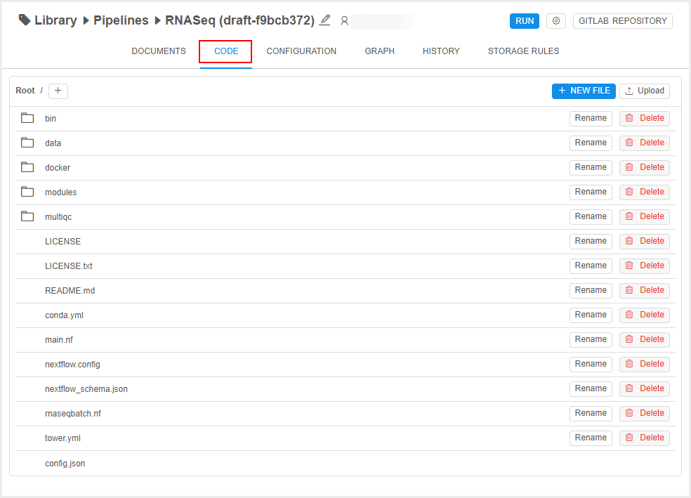
- Open
nextflow.configfile that defines Nextflow-specific details of the pipeline configuration:
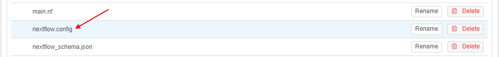
-
To the section
profilesof the config file, insert a new profile for running on Batch in GCP, e.g.'google-batch'. This profile should contain the following:'google-batch' { params.transcriptome = 'gs://rnaseq-nf/data/ggal/transcript.fa' params.reads = 'gs://rnaseq-nf/data/ggal/gut_{1,2}.fq' params.multiqc = 'gs://rnaseq-nf/multiqc' params.outdir = '<gs_output_path>' process.executor = 'google-batch' process.container = 'quay.io/nextflow/rnaseq-nf:v1.1' workDir = '<gs_workdir_path>' google { region = '<gcp_region>' project = '<project_id>' location = '<gcp_region>' batch { serviceAccountEmail = '<gcp_service_account_name>' network = 'global/networks/<gcp_network>' subnetwork = 'regions/<gcp_region>/subnetworks/<gcp_subnetwork>' allowedLocations = ['regions/<gcp_region>'] } } }Where shall be specified:
<gs_output_path>- path inside your Google Cloud storage where results will be output<gs_workdir_path>- path inside your Google Cloud storage where logs and intermediate results will be stored<gcp_region>- name of the GCP region that is used.<project_id>- your GCP project ID. You can find it in the settings of your Google Cloud region, e.g.:
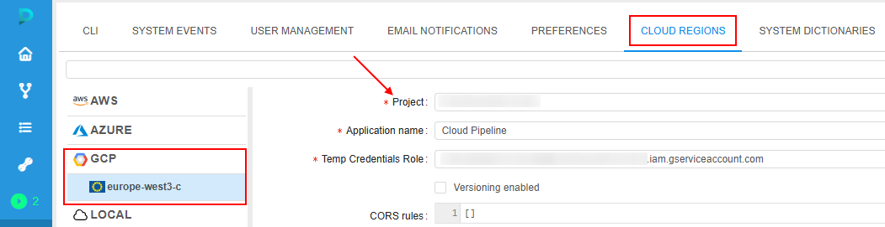
<gcp_service_account_name>- name of your GCP service account. You can find it in the settings of your Google Cloud region, e.g.:
<gcp_network>- name of your job's network<gcp_subnetwork>- name of your job's subnetwork
You can find values for network and subnetwork in thecluster.networks.configpreference, in section of the GCP region definition, e.g.:
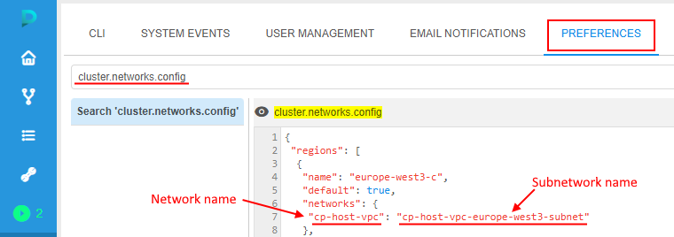
Example of the filled in profile:

-
Save changed
nextflow.configfile. -
Specify the use of the just-created profile for the main
nextflow runcommand of your pipeline using the-profileoption, e.g.:
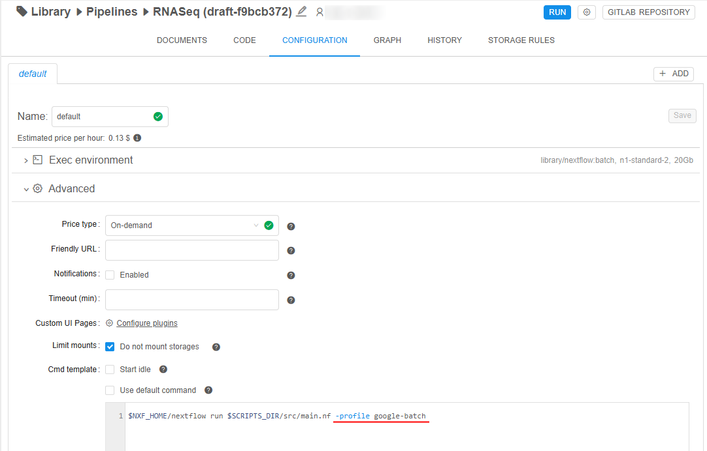
Another place, where this command may be specified - main script at the CODE tab of the pipeline page, e.g.:
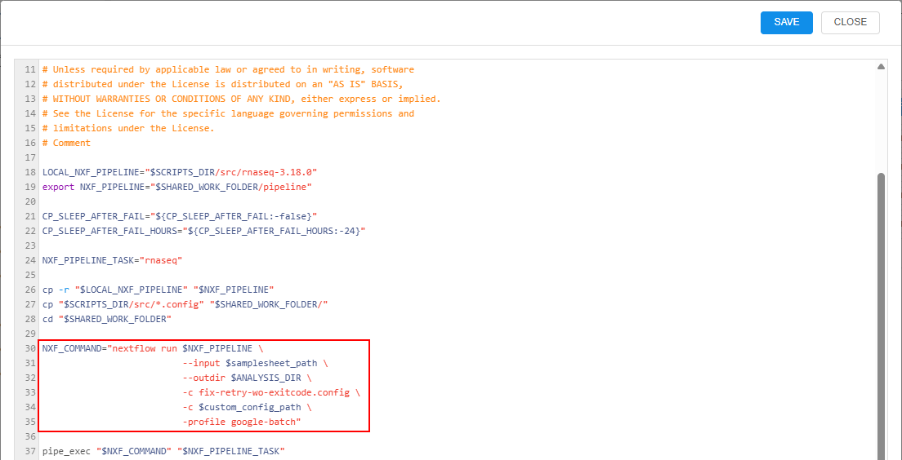
Save changes.
-
Now, you may launch your Nextflow pipeline as usual.
- During the pipeline running, you may follow the Nextflow Batch execution logs in the console, e.g.:
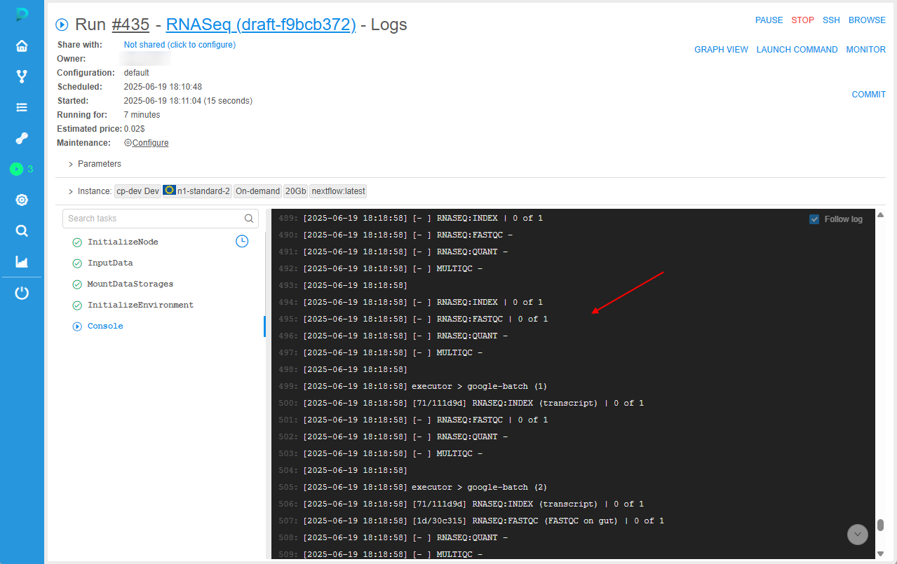
- After the pipeline finishes running, it stores result files by the output path inside Google Cloud storage that was specified in the
'google-batch'profile of the pipeline'snextflow.configfile previously.
You may view them using Library GUI, e.g.:
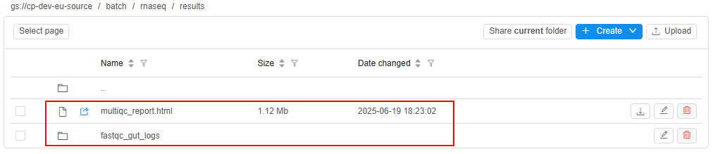